Biomedical Engineer | Full-Stack Developer | AI Enthusiast
Bridging engineering innovation and clinical needs through cutting-edge technology
Final-year Biomedical Engineering student at Tel Aviv University with hands-on experience in medical device development, signal processing, and product design. Passionate about bridging engineering innovation and clinical needs.
Demonstrated analytical and leadership skills through leading a multidisciplinary medical device project at Beilinson Hospital. Proficient in Python, JavaScript, React, Next.js, and various AI/ML frameworks.
A showcase of my work in AI, biomedical engineering, and full-stack development
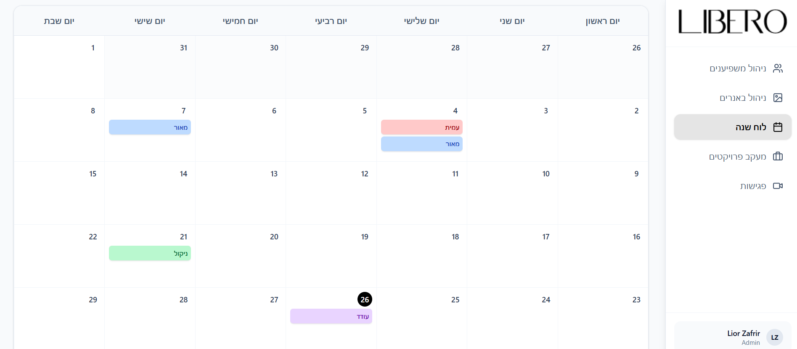
End-to-end Marketing Operations platform built with React and Vite, running on Supabase backend with PostgreSQL. Features influencer collaboration management, campaign planning, and banner scheduling with modern glassmorphic UI.
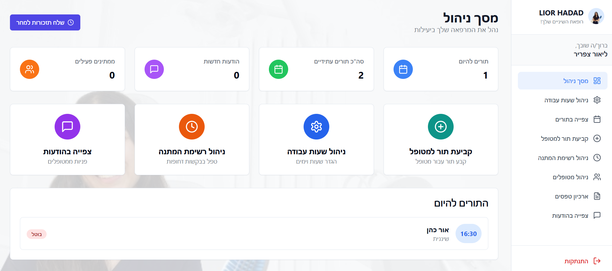
Full-stack clinic management system with React, Firebase, and real-time Firestore synchronization. Custom scheduling engine, automated notifications via EmailJS, and modern RTL-adapted UI.
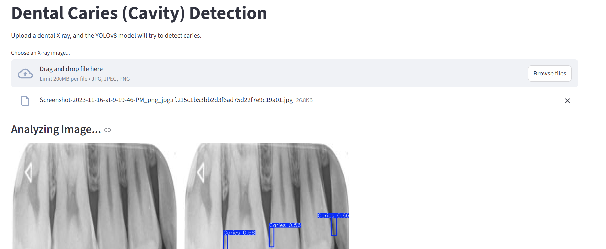
Deep Learning solution for automated caries detection using YOLOv8-OBB with Transfer Learning. Achieved 86.2% precision and 75.7% recall with interactive Streamlit interface and real-time OpenCV annotation.
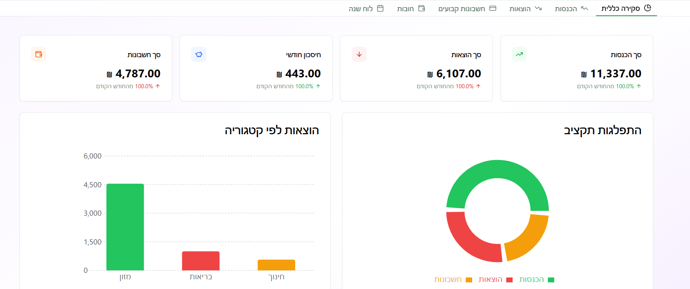
Comprehensive budget management app with Next.js 14, TypeScript, Prisma ORM, and PostgreSQL. Features Hebrew-first RTL interface, recurring transactions, calendar integration, and optimistic UI updates.
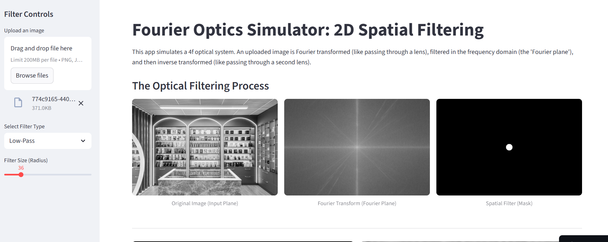
Interactive 2D Spatial Filtering simulator modeling 4f optical systems using NumPy FFT. Demonstrates real-time edge detection and blurring through frequency domain manipulation.
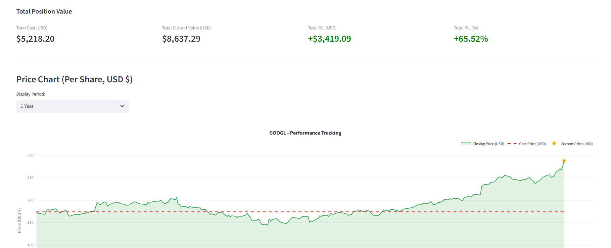
FinTech dashboard for algorithmic portfolio tracking with yfinance API integration. Real-time market data, P/L calculations, multi-currency FX conversion, and interactive Plotly charts.
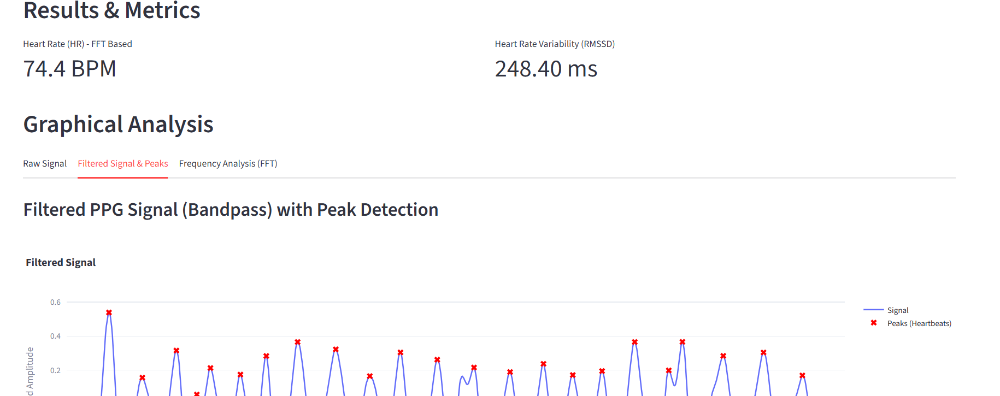
Real-time cardiovascular monitoring using Computer Vision and DSP. Facial detection with OpenCV, Butterworth filtering, FFT/PSD analysis for heart rate, and HRV calculation (RMSSD).
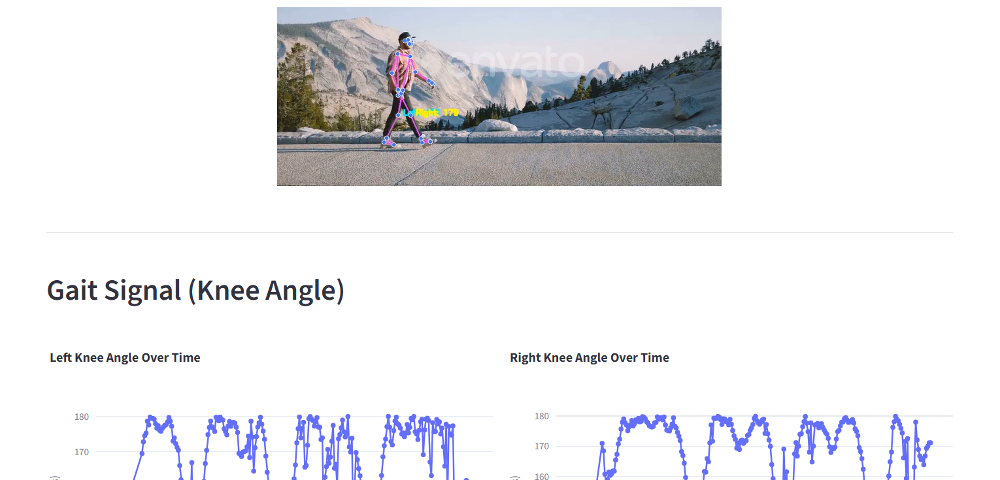
Computer Vision biomechanics lab using MediaPipe for markerless pose estimation. Real-time 3D landmark extraction, kinematic calculations, and interactive biomechanical visualization.
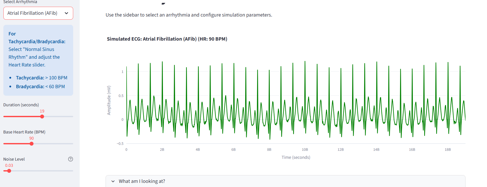
Interactive cardiac electrophysiology simulator using NeuroKit2 for synthetic ECG generation. Simulates AFib, PVCs, VT, and AV Blocks with dynamic parameter control and real-time visualization.
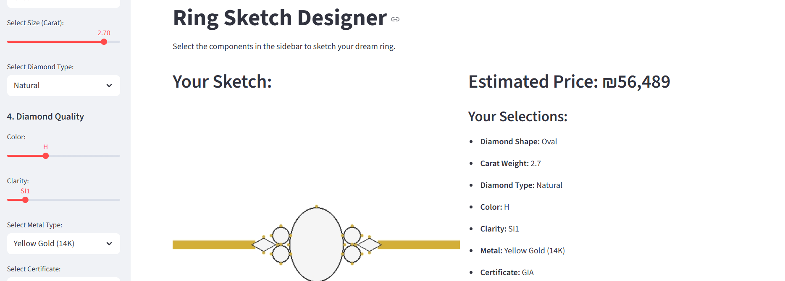
Procedural 2D rendering engine for gemological configurations using Pillow ImageDraw. Dynamic geometry rendering with 9 stone shapes, metal types, and rule-based pricing model in ILS.
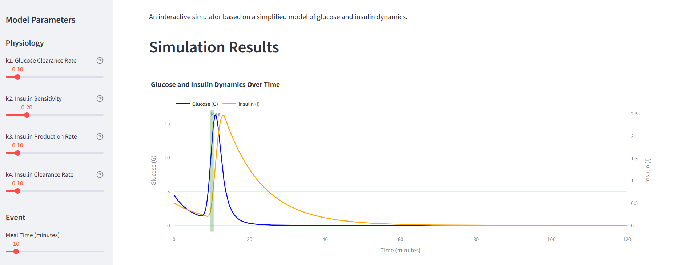
Systems Biology simulator modeling physiological dynamics through ODEs. Uses SciPy's solve_ivp for numerical solutions with interactive parameter modulation and Plotly visualization.
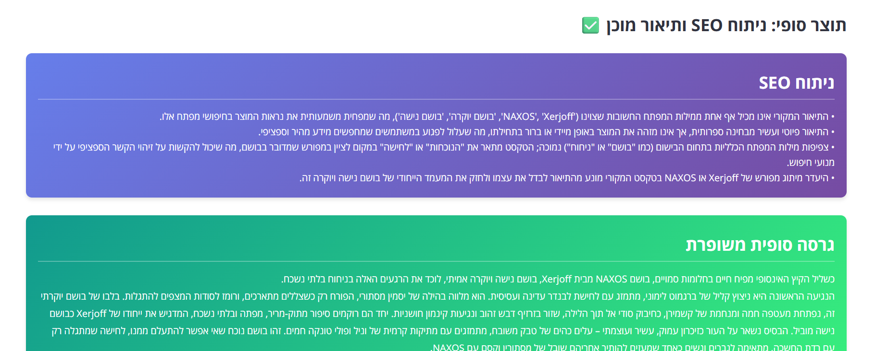
AI-powered content generator for SEO-optimized e-commerce descriptions. Multi-step pipeline with Google Custom Search API, BeautifulSoup scraping, and Gemini API for structured generation.
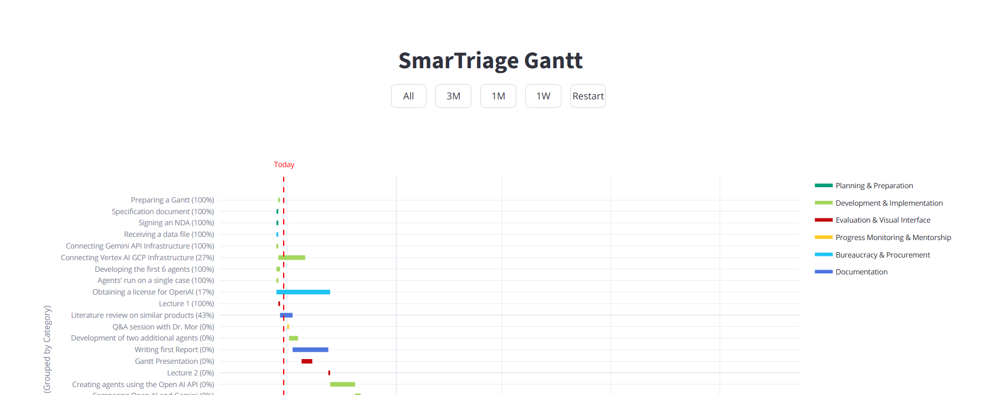
Dynamic project management dashboard with Pandas data pipeline and interactive Gantt charts. Features automatic progress calculation, color-coded timelines, and custom CSS-styled UI with date filtering.
Let's collaborate on innovative projects